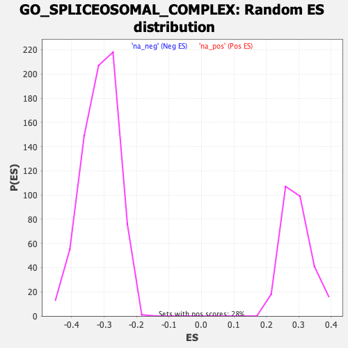

| | | Dataset | DE_genes |
| Phenotype | NoPhenotypeAvailable |
| Upregulated in class | na_neg |
| GeneSet | GO_SPLICEOSOMAL_COMPLEX |
| Enrichment Score (ES) | -0.52228415 |
| Normalized Enrichment Score (NES) | -1.673291 |
| Nominal p-value | 0.0 |
| FDR q-value | 0.086184636 |
| FWER p-Value | 0.834 |
Table: GSEA Results Summary
 Fig 1: Enrichment plot: GO_SPLICEOSOMAL_COMPLEX
Fig 1: Enrichment plot: GO_SPLICEOSOMAL_COMPLEX
Profile of the Running ES Score & Positions of GeneSet Members on the Rank Ordered List
| PROBE | GENE SYMBOL | GENE_TITLE | RANK IN GENE LIST | RANK METRIC SCORE | RUNNING ES | CORE ENRICHMENT | | 1 | SF3A2 | | | 358 | 2.399 | -0.0070 | No |
| 2 | SF3B4 | | | 379 | 2.306 | 0.0074 | No |
| 3 | HNRNPC | | | 495 | 1.778 | 0.0120 | No |
| 4 | LSM3 | | | 669 | 1.334 | 0.0098 | No |
| 5 | IVNS1ABP | | | 671 | 1.331 | 0.0188 | No |
| 6 | API5 | | | 863 | 1.014 | 0.0133 | No |
| 7 | U2AF2 | | | 1069 | 0.778 | 0.0052 | No |
| 8 | GEMIN2 | | | 1174 | 0.697 | 0.0031 | No |
| 9 | MAGOHB | | | 1405 | 0.564 | -0.0081 | No |
| 10 | ADAR | | | 1411 | 0.563 | -0.0045 | No |
| 11 | PLRG1 | | | 1435 | 0.550 | -0.0023 | No |
| 12 | MYEF2 | | | 1549 | 0.495 | -0.0063 | No |
| 13 | SF1 | | | 1691 | 0.436 | -0.0126 | No |
| 14 | ZMAT2 | | | 1738 | 0.412 | -0.0127 | No |
| 15 | SMNDC1 | | | 1995 | 0.328 | -0.0272 | No |
| 16 | RBMX2 | | | 2037 | 0.316 | -0.0278 | No |
| 17 | RBM22 | | | 2214 | 0.263 | -0.0375 | No |
| 18 | PPIL1 | | | 2224 | 0.261 | -0.0363 | No |
| 19 | RBMXL1 | | | 2246 | 0.256 | -0.0359 | No |
| 20 | ZNF830 | | | 2428 | 0.220 | -0.0462 | No |
| 21 | SNRNP25 | | | 3076 | 0.133 | -0.0876 | No |
| 22 | DDX39B | | | 3184 | 0.124 | -0.0937 | No |
| 23 | SNRPF | | | 3197 | 0.122 | -0.0937 | No |
| 24 | TXNL4A | | | 3575 | 0.094 | -0.1177 | No |
| 25 | SF3B3 | | | 3586 | 0.093 | -0.1177 | No |
| 26 | SNRNP48 | | | 3730 | 0.086 | -0.1265 | No |
| 27 | SNRNP40 | | | 3804 | 0.081 | -0.1307 | No |
| 28 | PRPF40A | | | 4067 | 0.066 | -0.1474 | No |
| 29 | CWC15 | | | 4104 | 0.064 | -0.1493 | No |
| 30 | SNRPA | | | 4554 | 0.039 | -0.1784 | No |
| 31 | CWC27 | | | 4789 | 0.026 | -0.1935 | No |
| 32 | SNRPD1 | | | 4931 | 0.020 | -0.2026 | No |
| 33 | SNRPB2 | | | 5023 | 0.015 | -0.2084 | No |
| 34 | SRRM1 | | | 5261 | 0.003 | -0.2239 | No |
| 35 | PRKRIP1 | | | 5528 | -0.011 | -0.2412 | No |
| 36 | PDCD7 | | | 5553 | -0.012 | -0.2427 | No |
| 37 | CWC25 | | | 5657 | -0.018 | -0.2493 | No |
| 38 | SF3A1 | | | 6311 | -0.060 | -0.2915 | No |
| 39 | RBMX | | | 6328 | -0.060 | -0.2922 | No |
| 40 | WAC | | | 6366 | -0.063 | -0.2942 | No |
| 41 | HNRNPA1 | | | 6377 | -0.064 | -0.2944 | No |
| 42 | SYNCRIP | | | 6455 | -0.069 | -0.2989 | No |
| 43 | CRNKL1 | | | 6481 | -0.071 | -0.3001 | No |
| 44 | LSM2 | | | 6567 | -0.077 | -0.3051 | No |
| 45 | BUD31 | | | 6612 | -0.082 | -0.3074 | No |
| 46 | WBP4 | | | 6677 | -0.086 | -0.3110 | No |
| 47 | SNRPD3 | | | 7042 | -0.114 | -0.3340 | No |
| 48 | TRA2A | | | 7142 | -0.122 | -0.3397 | No |
| 49 | SNRPE | | | 7218 | -0.128 | -0.3437 | No |
| 50 | HNRNPU | | | 7225 | -0.129 | -0.3432 | No |
| 51 | CDC5L | | | 7499 | -0.152 | -0.3600 | No |
| 52 | SMU1 | | | 7622 | -0.163 | -0.3669 | No |
| 53 | SRSF1 | | | 7647 | -0.165 | -0.3673 | No |
| 54 | ZCRB1 | | | 7667 | -0.167 | -0.3674 | No |
| 55 | LSM5 | | | 7695 | -0.170 | -0.3680 | No |
| 56 | LSM6 | | | 7924 | -0.191 | -0.3816 | No |
| 57 | UPF1 | | | 7980 | -0.196 | -0.3839 | No |
| 58 | SF3B2 | | | 7999 | -0.198 | -0.3837 | No |
| 59 | C9orf78 | | | 8021 | -0.201 | -0.3837 | No |
| 60 | MAGOH | | | 8307 | -0.231 | -0.4008 | No |
| 61 | AQR | | | 8501 | -0.251 | -0.4117 | No |
| 62 | PRPF38A | | | 8520 | -0.253 | -0.4111 | No |
| 63 | HNRNPA3 | | | 8663 | -0.269 | -0.4186 | No |
| 64 | FRG1 | | | 8677 | -0.271 | -0.4176 | No |
| 65 | BCAS2 | | | 8925 | -0.301 | -0.4317 | No |
| 66 | PPP1R8 | | | 9110 | -0.324 | -0.4415 | No |
| 67 | USP39 | | | 9177 | -0.332 | -0.4435 | No |
| 68 | PRPF3 | | | 9296 | -0.347 | -0.4489 | No |
| 69 | HNRNPF | | | 9498 | -0.373 | -0.4595 | No |
| 70 | SNRPB | | | 9609 | -0.390 | -0.4640 | No |
| 71 | RHEB | | | 9643 | -0.395 | -0.4634 | No |
| 72 | PPWD1 | | | 9695 | -0.403 | -0.4640 | No |
| 73 | PRPF18 | | | 9770 | -0.412 | -0.4661 | No |
| 74 | DHX8 | | | 9903 | -0.432 | -0.4717 | No |
| 75 | HNRNPR | | | 9916 | -0.434 | -0.4696 | No |
| 76 | LUC7L2 | | | 9942 | -0.438 | -0.4682 | No |
| 77 | EFTUD2 | | | 10128 | -0.466 | -0.4771 | No |
| 78 | NCL | | | 10154 | -0.470 | -0.4755 | No |
| 79 | TTF2 | | | 10320 | -0.493 | -0.4829 | No |
| 80 | SNRPG | | | 10324 | -0.494 | -0.4798 | No |
| 81 | PABPC1 | | | 10594 | -0.537 | -0.4937 | No |
| 82 | SNIP1 | | | 10830 | -0.572 | -0.5052 | No |
| 83 | SNW1 | | | 10835 | -0.572 | -0.5015 | No |
| 84 | SYF2 | | | 10905 | -0.582 | -0.5020 | No |
| 85 | RNPC3 | | | 10912 | -0.584 | -0.4985 | No |
| 86 | GPATCH1 | | | 11057 | -0.607 | -0.5037 | No |
| 87 | ZMAT5 | | | 11323 | -0.661 | -0.5165 | No |
| 88 | SNRPC | | | 11412 | -0.681 | -0.5176 | Yes |
| 89 | HNRNPA2B1 | | | 11476 | -0.694 | -0.5170 | Yes |
| 90 | RBM8A | | | 11503 | -0.699 | -0.5140 | Yes |
| 91 | TRA2B | | | 11550 | -0.709 | -0.5121 | Yes |
| 92 | RBM17 | | | 11554 | -0.710 | -0.5075 | Yes |
| 93 | CASC3 | | | 11571 | -0.714 | -0.5037 | Yes |
| 94 | SRRM2 | | | 11659 | -0.734 | -0.5043 | Yes |
| 95 | RALY | | | 11667 | -0.735 | -0.4998 | Yes |
| 96 | SNRPD2 | | | 11710 | -0.743 | -0.4974 | Yes |
| 97 | PHF5A | | | 11773 | -0.756 | -0.4963 | Yes |
| 98 | HNRNPK | | | 11778 | -0.756 | -0.4914 | Yes |
| 99 | HNRNPA1L2 | | | 11794 | -0.761 | -0.4872 | Yes |
| 100 | PPIE | | | 11998 | -0.805 | -0.4950 | Yes |
| 101 | DDX41 | | | 11999 | -0.805 | -0.4895 | Yes |
| 102 | PPIL3 | | | 12030 | -0.811 | -0.4859 | Yes |
| 103 | CWF19L1 | | | 12036 | -0.812 | -0.4807 | Yes |
| 104 | EIF4A3 | | | 12080 | -0.822 | -0.4779 | Yes |
| 105 | ALYREF | | | 12125 | -0.836 | -0.4751 | Yes |
| 106 | PRPF8 | | | 12158 | -0.843 | -0.4714 | Yes |
| 107 | IK | | | 12187 | -0.853 | -0.4675 | Yes |
| 108 | U2AF1 | | | 12188 | -0.853 | -0.4616 | Yes |
| 109 | YBX1 | | | 12218 | -0.858 | -0.4577 | Yes |
| 110 | SUGP1 | | | 12266 | -0.868 | -0.4548 | Yes |
| 111 | PRPF40B | | | 12377 | -0.895 | -0.4559 | Yes |
| 112 | PRPF19 | | | 12467 | -0.920 | -0.4554 | Yes |
| 113 | ZCCHC8 | | | 12690 | -0.979 | -0.4633 | Yes |
| 114 | SART1 | | | 12718 | -0.987 | -0.4583 | Yes |
| 115 | AAR2 | | | 12735 | -0.993 | -0.4526 | Yes |
| 116 | WDR83 | | | 12759 | -1.000 | -0.4473 | Yes |
| 117 | PRPF38B | | | 12769 | -1.002 | -0.4410 | Yes |
| 118 | PRPF4 | | | 12807 | -1.014 | -0.4365 | Yes |
| 119 | DHX16 | | | 12820 | -1.018 | -0.4304 | Yes |
| 120 | CCDC12 | | | 12856 | -1.030 | -0.4256 | Yes |
| 121 | HNRNPH3 | | | 12938 | -1.057 | -0.4237 | Yes |
| 122 | CDC40 | | | 12994 | -1.073 | -0.4200 | Yes |
| 123 | SLU7 | | | 13064 | -1.096 | -0.4170 | Yes |
| 124 | RBM28 | | | 13180 | -1.129 | -0.4168 | Yes |
| 125 | SF3A3 | | | 13185 | -1.132 | -0.4094 | Yes |
| 126 | RBM3 | | | 13200 | -1.139 | -0.4025 | Yes |
| 127 | CACTIN | | | 13204 | -1.141 | -0.3949 | Yes |
| 128 | DHX35 | | | 13212 | -1.143 | -0.3876 | Yes |
| 129 | PPIH | | | 13310 | -1.176 | -0.3859 | Yes |
| 130 | DHX15 | | | 13336 | -1.186 | -0.3794 | Yes |
| 131 | U2AF1L4 | | | 13360 | -1.198 | -0.3728 | Yes |
| 132 | PNN | | | 13374 | -1.203 | -0.3654 | Yes |
| 133 | GPKOW | | | 13393 | -1.211 | -0.3583 | Yes |
| 134 | CTNNBL1 | | | 13397 | -1.212 | -0.3502 | Yes |
| 135 | PRPF4B | | | 13405 | -1.215 | -0.3424 | Yes |
| 136 | LUC7L | | | 13455 | -1.236 | -0.3372 | Yes |
| 137 | LGALS3 | | | 13580 | -1.285 | -0.3365 | Yes |
| 138 | DHX38 | | | 13599 | -1.292 | -0.3289 | Yes |
| 139 | PRPF31 | | | 13712 | -1.338 | -0.3271 | Yes |
| 140 | SNRNP200 | | | 13820 | -1.387 | -0.3246 | Yes |
| 141 | ZRSR2 | | | 13870 | -1.409 | -0.3182 | Yes |
| 142 | DDX23 | | | 13922 | -1.434 | -0.3117 | Yes |
| 143 | HNRNPM | | | 14017 | -1.478 | -0.3078 | Yes |
| 144 | SNRNP70 | | | 14069 | -1.513 | -0.3008 | Yes |
| 145 | SF3B1 | | | 14247 | -1.628 | -0.3013 | Yes |
| 146 | LSM7 | | | 14258 | -1.634 | -0.2908 | Yes |
| 147 | SF3B5 | | | 14303 | -1.662 | -0.2823 | Yes |
| 148 | SNRNP35 | | | 14320 | -1.671 | -0.2720 | Yes |
| 149 | RBM5 | | | 14368 | -1.697 | -0.2634 | Yes |
| 150 | LSM4 | | | 14413 | -1.724 | -0.2546 | Yes |
| 151 | HTATSF1 | | | 14414 | -1.724 | -0.2428 | Yes |
| 152 | RNF113A | | | 14470 | -1.767 | -0.2343 | Yes |
| 153 | GCFC2 | | | 14502 | -1.790 | -0.2241 | Yes |
| 154 | ISY1 | | | 14510 | -1.796 | -0.2124 | Yes |
| 155 | PRPF6 | | | 14541 | -1.820 | -0.2019 | Yes |
| 156 | BUD13 | | | 14572 | -1.846 | -0.1913 | Yes |
| 157 | HNRNPH1 | | | 14579 | -1.852 | -0.1790 | Yes |
| 158 | PTBP2 | | | 14600 | -1.874 | -0.1675 | Yes |
| 159 | DDX5 | | | 14618 | -1.893 | -0.1557 | Yes |
| 160 | LUC7L3 | | | 14650 | -1.919 | -0.1447 | Yes |
| 161 | CWC22 | | | 14718 | -1.989 | -0.1355 | Yes |
| 162 | CWF19L2 | | | 14751 | -2.020 | -0.1238 | Yes |
| 163 | SNRPA1 | | | 14758 | -2.026 | -0.1104 | Yes |
| 164 | HSPA8 | | | 14798 | -2.061 | -0.0988 | Yes |
| 165 | PRPF39 | | | 14853 | -2.107 | -0.0880 | Yes |
| 166 | MFAP1 | | | 15278 | -2.861 | -0.0962 | Yes |
| 167 | AKAP17A | | | 15295 | -2.902 | -0.0774 | Yes |
| 168 | TFIP11 | | | 15343 | -3.126 | -0.0592 | Yes |
| 169 | CIRBP | | | 15360 | -3.258 | -0.0380 | Yes |
| 170 | SREK1 | | | 15361 | -3.281 | -0.0156 | Yes |
| 171 | XAB2 | | | 15366 | -3.333 | 0.0069 | Yes |
Table: GSEA details [plain text format]

Fig 2: GO_SPLICEOSOMAL_COMPLEX: Random ES distribution
Gene set null distribution of ES for GO_SPLICEOSOMAL_COMPLEX